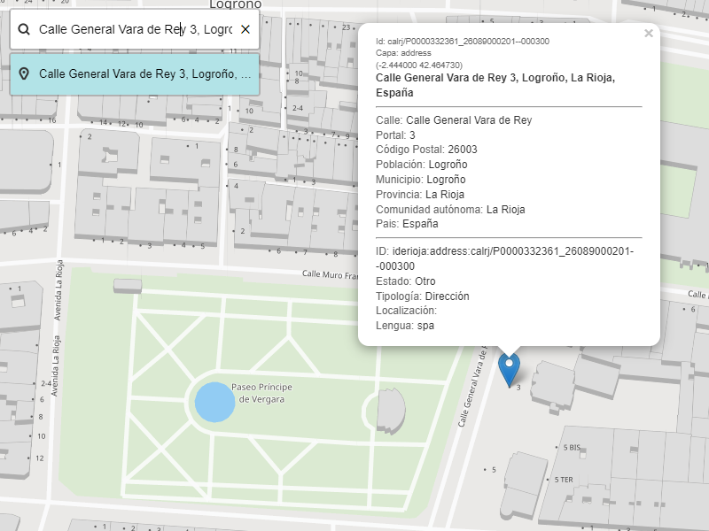

BUSCADOR DE DIRECCIONES
A partir de los servicios y métodos de la API de geocodificación, el Gobierno de La Rioja ha implementado un visualizador geográfico que permite realizar una búsqueda interactiva de las direcciones almacenadas en la base de datos del Callejero de La Rioja.
Se puede acceder a este visualizador de búsqueda en la url: https://www.larioja.org/callejero
Los mecanismos de búsqueda se apoyan en los trés métodos de búsqueda implementados en la API:
GEOCODIFICACIÓN DIRECTA: Introduciendo el texto de la dirección que se desea localizar y pulsando la tecla [INTRO], el visualizador devuelve los datos y la ubicación de la dirección que mejor se ajusta al texto introducido.

GEOCODIFICACIÓN INVERSA: Clicando con sobre el mapa con el botón izquierdo del ratón, el visualizador muestra los datos de la dirección más cercana al punto del mapa seleccionado.

AUTOCOMPLETAR: Como se puede observar, a medida que se va introduciendo el texto en el cajetín de búsqueda, en la parte inferior del mismo se presentan al vuelo los datos de direcciones que más se ajustan al texto escrito. Una vez aparece la dirección buscada se selecciona para mostrarla en el mapa.